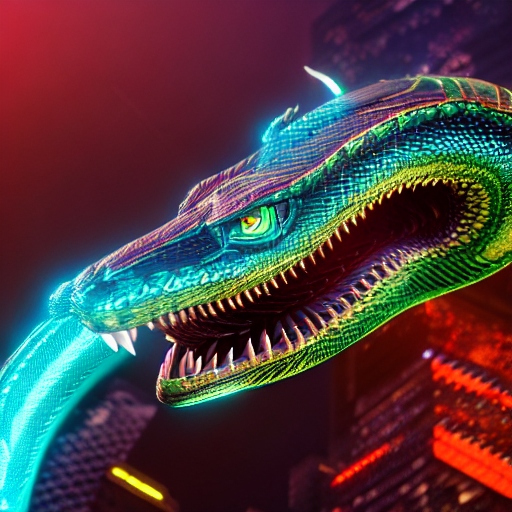

Description: The Shadowfang Serpent is a sleek, serpentine predator with iridescent scales that shimmer in the sunlight. Its most notable feature is its retractable fangs, which inject a paralyzing venom into its prey.They are stealthy and elusive, the Shadowfang Serpent hunts by ambushing its prey from the shadows. It possesses remarkable agility, allowing it to navigate the dense foliage of Chalupax with ease.They prefers to inhabit the darker regions of the jungle where it can blend seamlessly with its surroundings. They are carnivorous, feeding primarily on small creatures such as Vorgrak Beetles and other reptiles. Adult Shadowfang Serpents have few natural predators, though they may occasionally fall prey to larger predators or rival serpents.They live up to 25 standard Chalupaxian years.
Planet: chalupax